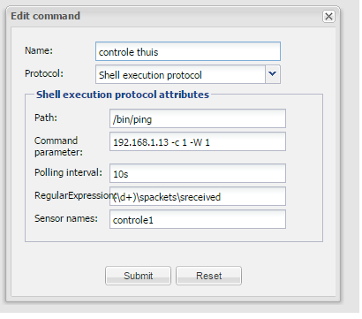

|
This page last changed on Dec 23, 2014 by robnas.
Hello,
ive read this articlehttp://www.openremote.org/pages/viewpage.action?pageId=21037421
and im running into the same problem

when executing the result is:
PING 192.169.1.13 (192.168.1.13): 56 data bytes
but i need to get this info:
PING 192.168.1.13 (192.168.1.13): 56 data bytes
— 192.168.1.13 ping statistics —
1 packets transmitted, 0 packets received, 100% packet loss
NAS>
i will only receive 1 line of information and the regex code is unable to parse the data. so my sensor will not switch.
is there already a fix in the controller? im using: OpenRemote-Controller-2.2.0_TTS-Email-Serial.zip
i also tried this option:
http://www.openremote.org/display/forums/Shell+Command+Example
to execute an .sh file, im running the controller on a synology NAS but it gives a java error: error=13, Permission denied
i tried to chmod 777 and +x the .sh filename command http://stackoverflow.com/questions/3085897/permission-denied-error-in-java-for-chmod-command
i can execute the file in telnet or in SSH but the controller cannot start it
any suggestions?
|
1. Please make sure that you reboot the controller each time you are using the shell protocol and update design. Restart is not enough. On NAS it would be enough to stop and start the Openremote package through the package centre.
2. Look into log files and check if the response from the shell command is what it should be.

Posted by aktur at Dec 24, 2014 10:13
|
|
Thanks Michal,
that did the trick.
my shell logfile says:
— 192.168.1.13 ping statistics —
1 packets transmitted, 0 packets received, 100% packet loss
#DEBUG 2014-12-24 12:02:10,786 (Shell): Building ShellExe command
#DEBUG 2014-12-24 12:02:10,857 (Shell): ShellExe Command: commandParams = 192.168.1.13 -c 1 -W 1
#DEBUG 2014-12-24 12:02:10,857 (Shell): ShellExe Command: regex = (\d+)\spackets\sreceived
#DEBUG 2014-12-24 12:02:10,857 (Shell): ShellExe Command: pollingInterval = 10s
#DEBUG 2014-12-24 12:02:10,858 (Shell): ShellExe Command: sensorNamesList = controle2
#DEBUG 2014-12-24 12:02:10,879 (Shell): ShellExe Command: commandPath= /bin/ping
#DEBUG 2014-12-24 12:02:10,880 (Shell): ShellExe Command created successfully
#DEBUG 2014-12-24 12:02:16,464 (Shell): *** setSensor called as part of EventListener init *** sensor is: Sensor (Name = 'controle gsm thuis', #ID = '5845920', State Mappings: Unknown macro: {1=off, 0=on} )
#DEBUG 2014-12-24 12:02:16,470 (Shell): Thread started: Polling thread for sensor: controle gsm thuis 5845920
#DEBUG 2014-12-24 12:02:16,470 (Shell): Will start shell command: /bin/ping and use params: 192.168.1.13 -c 1 -W 1
#DEBUG 2014-12-24 12:02:17,489 (Shell): Shell command: /bin/ping returned: PING 192.168.1.13 (192.168.1.13): 56 data bytes
— 192.168.1.13 ping statistics —
now i have to look what the sensor says and if it will switch
Posted by robnas at Dec 24, 2014 11:11
|
|
it works  many thanks. many thanks.
i have another issue when i look at the boot.log there are some unknow errors for me:
-------------------------------------------------------------------
DEPLOYING NEW CONTROLLER RUNTIME...
--------------------------------------------------------------------
ERROR 2014-12-24 12:05:39,631 : Reading controller's definition failed : Unable to parse controller definition from '/volume1/@appstore/OpenRemote/bin/../webapps/controller/controller.xml' (accessing schema from '/volume1/@appstore/OpenRemote/webapps/controller/WEB-INF/classes/controller-2.0-M7.xsd') : Error on line 1655 of document file:/volume1/@appstore/OpenRemote/bin/../webapps/controller/controller.xml: XML document structures must start and end within the same entity.
org.openremote.controller.exception.XMLParsingException: Unable to parse controller definition from '/volume1/@appstore/OpenRemote/bin/../webapps/controller/controller.xml' (accessing schema from '/volume1/@appstore/OpenRemote/webapps/controller/WEB-INF/classes/controller-2.0-M7.xsd') : Error on line 1655 of document file:/volume1/@appstore/OpenRemote/bin/../webapps/controller/controller.xml: XML document structures must start and end within the same entity.
at org.openremote.controller.deployer.Version20ModelBuilder.readControllerXMLDocument(Version20ModelBuilder.java:639)
at org.openremote.controller.deployer.AbstractModelBuilder.buildModel(AbstractModelBuilder.java:152)
at org.openremote.controller.service.Deployer.startup(Deployer.java:858)
at org.openremote.controller.service.Deployer.softRestart(Deployer.java:440)
at org.openremote.controller.service.Deployer$ControllerDefinitionWatch.run(Deployer.java:1324)
at java.lang.Thread.run(Thread.java:662)
Caused by: org.jdom.input.JDOMParseException: Error on line 1655 of document file:/volume1/@appstore/OpenRemote/bin/../webapps/controller/controller.xml: XML document structures must start and end within the same entity.
at org.jdom.input.SAXBuilder.build(SAXBuilder.java:465)
at org.jdom.input.SAXBuilder.build(SAXBuilder.java:810)
at org.jdom.input.SAXBuilder.build(SAXBuilder.java:789)
at org.openremote.controller.deployer.Version20ModelBuilder.readControllerXMLDocument(Version20ModelBuilder.java:634)
... 5 more
Caused by: org.xml.sax.SAXParseException: XML document structures must start and end within the same entity.
at com.sun.org.apache.xerces.internal.util.ErrorHandlerWrapper.createSAXParseException(ErrorHandlerWrapper.java:195)
at com.sun.org.apache.xerces.internal.util.ErrorHandlerWrapper.fatalError(ErrorHandlerWrapper.java:174)
at com.sun.org.apache.xerces.internal.impl.XMLErrorReporter.reportError(XMLErrorReporter.java:388)
at com.sun.org.apache.xerces.internal.impl.XMLScanner.reportFatalError(XMLScanner.java:1427)
at com.sun.org.apache.xerces.internal.impl.XMLDocumentFragmentScannerImpl.endEntity(XMLDocumentFragmentScannerImpl.java:905)
at com.sun.org.apache.xerces.internal.impl.XMLDocumentScannerImpl.endEntity(XMLDocumentScannerImpl.java:604)
at com.sun.org.apache.xerces.internal.impl.XMLEntityManager.endEntity(XMLEntityManager.java:1391)
at com.sun.org.apache.xerces.internal.impl.XMLEntityScanner.load(XMLEntityScanner.java:1763)
at com.sun.org.apache.xerces.internal.impl.XMLEntityScanner.scanLiteral(XMLEntityScanner.java:1064)
at com.sun.org.apache.xerces.internal.impl.XMLScanner.scanAttributeValue(XMLScanner.java:987)
at com.sun.org.apache.xerces.internal.impl.XMLNSDocumentScannerImpl.scanAttribute(XMLNSDocumentScannerImpl.java:460)
at com.sun.org.apache.xerces.internal.impl.XMLNSDocumentScannerImpl.scanStartElement(XMLNSDocumentScannerImpl.java:277)
at com.sun.org.apache.xerces.internal.impl.XMLDocumentFragmentScannerImpl$FragmentContentDriver.next(XMLDocumentFragmentScannerImpl.java:2756)
at com.sun.org.apache.xerces.internal.impl.XMLDocumentScannerImpl.next(XMLDocumentScannerImpl.java:647)
at com.sun.org.apache.xerces.internal.impl.XMLNSDocumentScannerImpl.next(XMLNSDocumentScannerImpl.java:140)
at com.sun.org.apache.xerces.internal.impl.XMLDocumentFragmentScannerImpl.scanDocument(XMLDocumentFragmentScannerImpl.java:511)
at com.sun.org.apache.xerces.internal.parsers.XML11Configuration.parse(XML11Configuration.java:808)
at com.sun.org.apache.xerces.internal.parsers.XML11Configuration.parse(XML11Configuration.java:737)
at com.sun.org.apache.xerces.internal.parsers.XMLParser.parse(XMLParser.java:119)
at com.sun.org.apache.xerces.internal.parsers.AbstractSAXParser.parse(AbstractSAXParser.java:1205)
at com.sun.org.apache.xerces.internal.jaxp.SAXParserImpl$JAXPSAXParser.parse(SAXParserImpl.java:522)
at org.jdom.input.SAXBuilder.build(SAXBuilder.java:453)
... 8 more
INFO 2014-12-24 12:05:40,467 : Startup complete.
INFO 2014-12-24 12:05:42,477 :
--------------------------------------------------------------------
UNDEPLOYING CURRENT CONTROLLER RUNTIME...
--------------------------------------------------------------------
INFO 2014-12-24 12:05:42,479 : Stopped event processor : Drools Rule Engine
INFO 2014-12-24 12:05:42,479 : Stopped event processor : RRD4J Data Logger
INFO 2014-12-24 12:05:42,479 : Stopped event processor : EmonCMS Data Logger
INFO 2014-12-24 12:05:42,480 : Shutdown complete.
INFO 2014-12-24 12:05:42,481 :
--------------------------------------------------------------------
DEPLOYING NEW CONTROLLER RUNTIME...
--------------------------------------------------------------------
ERROR 2014-12-24 12:05:46,587 : Can't copy lircd.conf to /etc/lircd.conf
java.io.FileNotFoundException: /etc/lircd.conf (Permission denied)
at java.io.FileOutputStream.open(Native Method)
at java.io.FileOutputStream.<init>(FileOutputStream.java:194)
at java.io.FileOutputStream.<init>(FileOutputStream.java:145)
at org.apache.commons.io.FileUtils.doCopyFile(FileUtils.java:671)
at org.apache.commons.io.FileUtils.copyFile(FileUtils.java:653)
at org.apache.commons.io.FileUtils.copyFileToDirectory(FileUtils.java:587)
at org.apache.commons.io.FileUtils.copyFileToDirectory(FileUtils.java:558)
at org.openremote.controller.service.Deployer.copyLircdConf(Deployer.java:1125)
at org.openremote.controller.service.Deployer.deployFromZip(Deployer.java:507)
at org.openremote.controller.service.Deployer.deployFromOnline(Deployer.java:540)
at org.openremote.controller.action.ConfigManageController.syncOnline(ConfigManageController.java:140)
at sun.reflect.NativeMethodAccessorImpl.invoke0(Native Method)
at sun.reflect.NativeMethodAccessorImpl.invoke(NativeMethodAccessorImpl.java:39)
at sun.reflect.DelegatingMethodAccessorImpl.invoke(DelegatingMethodAccessorImpl.java:25)
at java.lang.reflect.Method.invoke(Method.java:597)
at org.springframework.web.servlet.mvc.multiaction.MultiActionController.invokeNamedMethod(MultiActionController.java:434)
at org.springframework.web.servlet.mvc.multiaction.MultiActionController.handleRequestInter
the rest of the log looks good except these lines:
ERROR 2014-12-24 12:05:46,587 : Can't copy lircd.conf to /etc/lircd.conf
java.io.FileNotFoundException: /etc/lircd.conf (Permission denied)
and:
ERROR 2014-12-24 12:05:39,631 : Reading controller's definition failed : Unable to parse controller definition from '/volume1/@appstore/OpenRemote/bin/../webapps/controller/controller.xml' (accessing schema from '/volume1/@appstore/OpenRemote/webapps/controller/WEB-INF/classes/controller-2.0-M7.xsd') : Error on line 1655 of document file:/volume1/@appstore/OpenRemote/bin/../webapps/controller/controller.xml: XML document structures must start and end within the same entity.
org.openremote.controller.exception.XMLParsingException: Unable to parse controller definition from '/volume1/@appstore/OpenRemote/bin/../webapps/controller/controller.xml' (accessing schema from '/volume1/@appstore/OpenRemote/webapps/controller/WEB-INF/classes/controller-2.0-M7.xsd') : Error on line 1655 of document file:/volume1/@appstore/OpenRemote/bin/../webapps/controller/controller.xml: XML document structures must start and end within the same entity.
everything works fine but sometimes my android app crashes mabe that could be the problem?
Posted by robnas at Dec 24, 2014 11:33
|
ERROR 2014-12-24 12:05:46,587 : Can't copy lircd.conf to /etc/lircd.conf
java.io.FileNotFoundException: /etc/lircd.conf (Permission denied)
Permission denied means that openremote cannot read /etc/lircd.conf file. Only needed when you are using lircd, but I suppose you don't, otherwise you will know that it is not working.
ERROR 2014-12-24 12:05:39,631 : Reading controller's definition failed : Unable to parse controller definition from '/volume1/@appstore/OpenRemote/bin/../webapps/controller/controller.xml' (accessing schema from '/volume1/@appstore/OpenRemote/webapps/controller/WEB-INF/classes/controller-2.0-M7.xsd') : Error on line 1655 of document file:/volume1/@appstore/OpenRemote/bin/../webapps/controller/controller.xml: XML document structures must start and end within the same entity.
org.openremote.controller.exception.XMLParsingException: Unable to parse controller definition from '/volume1/@appstore/OpenRemote/bin/../webapps/controller/controller.xml' (accessing schema from '/volume1/@appstore/OpenRemote/webapps/controller/WEB-INF/classes/controller-2.0-M7.xsd') : Error on line 1655 of document file:/volume1/@appstore/OpenRemote/bin/../webapps/controller/controller.xml: XML document structures must start and end within the same entity.
This happens during syncing when controller is already trying to read the new design but it is not yet fully synced. Usually this error goes away by itself when syncing completes.
Posted by aktur at Dec 24, 2014 15:33
|
|
now i have made some more shell ping comands the openremote controller stops executing shell commands, my logfile stays empty and shell comands are not working.
the boot log shows no error
any idea?
Posted by robnas at Dec 25, 2014 18:58
|
|
im back with the same problem. ive reboted the controller and synology but it still reads 1 line, it has worked before. very odd
DEBUG 2015-02-05 12:27:13,931 (Shell): Building ShellExe command
DEBUG 2015-02-05 12:27:13,949 (Shell): ShellExe Command: commandParams = google.com -c 2 -W 1
DEBUG 2015-02-05 12:27:13,950 (Shell): ShellExe Command: regex = (\d+)\spackets\sreceived
DEBUG 2015-02-05 12:27:13,950 (Shell): ShellExe Command: pollingInterval = 30m
DEBUG 2015-02-05 12:27:13,951 (Shell): ShellExe Command: sensorNamesList = ping sensor
DEBUG 2015-02-05 12:27:13,951 (Shell): ShellExe Command: commandPath= /bin/ping
DEBUG 2015-02-05 12:27:13,972 (Shell): ShellExe Command created successfully
DEBUG 2015-02-05 12:27:19,746 (Shell): Building ShellExe command
DEBUG 2015-02-05 12:27:19,747 (Shell): ShellExe Command: commandParams = 192.168.1.124 -c -W 1
DEBUG 2015-02-05 12:27:19,747 (Shell): ShellExe Command: regex = (\d+)\spackets\sreceived
DEBUG 2015-02-05 12:27:19,748 (Shell): ShellExe Command: pollingInterval = 60m
DEBUG 2015-02-05 12:27:19,748 (Shell): ShellExe Command: sensorNamesList = sensor mediapl
DEBUG 2015-02-05 12:27:19,748 (Shell): ShellExe Command: commandPath= /bin/ping
DEBUG 2015-02-05 12:27:19,749 (Shell): ShellExe Command created successfully
DEBUG 2015-02-05 12:27:31,535 (Shell): Building ShellExe command
DEBUG 2015-02-05 12:27:31,535 (Shell): ShellExe Command: commandParams = 192.168.1.90 -c 1 -W 1
DEBUG 2015-02-05 12:27:31,536 (Shell): ShellExe Command: regex = (\d+)\spackets\sreceived
DEBUG 2015-02-05 12:27:31,536 (Shell): ShellExe Command: pollingInterval = 30m
DEBUG 2015-02-05 12:27:31,537 (Shell): ShellExe Command: sensorNamesList = ping pc
DEBUG 2015-02-05 12:27:31,537 (Shell): ShellExe Command: commandPath= /bin/ping
DEBUG 2015-02-05 12:27:31,538 (Shell): ShellExe Command created successfully
DEBUG 2015-02-05 12:27:36,073 (Shell): Building ShellExe command
DEBUG 2015-02-05 12:27:36,074 (Shell): ShellExe Command: commandParams = 192.168.1.13 -c 1 -W 1
DEBUG 2015-02-05 12:27:36,074 (Shell): ShellExe Command: regex = (\d+)\spackets\sreceived
DEBUG 2015-02-05 12:27:36,075 (Shell): ShellExe Command: pollingInterval = 30s
DEBUG 2015-02-05 12:27:36,075 (Shell): ShellExe Command: sensorNamesList = controle gsm
DEBUG 2015-02-05 12:27:36,075 (Shell): ShellExe Command: commandPath= /bin/ping
DEBUG 2015-02-05 12:27:36,076 (Shell): ShellExe Command created successfully
DEBUG 2015-02-05 12:27:56,158 (Shell): Building ShellExe command
DEBUG 2015-02-05 12:27:56,159 (Shell): ShellExe Command: regex = (\d+)\spackets\sreceived
DEBUG 2015-02-05 12:27:56,160 (Shell): ShellExe Command: pollingInterval = 30s
DEBUG 2015-02-05 12:27:56,160 (Shell): ShellExe Command: sensorNamesList = gsm1
DEBUG 2015-02-05 12:27:56,160 (Shell): ShellExe Command: commandPath= /volume1/public/openremote_scripts/pinggsm.sh
DEBUG 2015-02-05 12:27:56,161 (Shell): ShellExe Command created successfully
DEBUG 2015-02-05 12:27:56,856 (Shell): *** setSensor called as part of EventListener init *** sensor is: Sensor (Name = 'gsm1', ID = '106627756', State Mappings: 1=on, 0=off)
DEBUG 2015-02-05 12:27:56,933 (Shell): Thread started: Polling thread for sensor: gsm1 106627756
DEBUG 2015-02-05 12:27:56,939 (Shell): Will start shell command: /volume1/public/openremote_scripts/pinggsm.sh and use params: null
DEBUG 2015-02-05 12:27:57,374 (Shell): Shell command: /volume1/public/openremote_scripts/pinggsm.sh returned: PING 192.168.1.13 (192.168.1.13): 56 data bytes
INFO 2015-02-05 12:27:57,376 (Shell): regex evaluation did not find a match
DEBUG 2015-02-05 12:27:57,773 (Shell): *** setSensor called as part of EventListener init *** sensor is: Sensor (Name = 'controle gsm', ID = '105745920', State Mappings: 1=on, 0=off)
DEBUG 2015-02-05 12:27:57,784 (Shell): Thread started: Polling thread for sensor: controle gsm 105745920
DEBUG 2015-02-05 12:27:57,808 (Shell): Will start shell command: /bin/ping and use params: 192.168.1.13 -c 1 -W 1
DEBUG 2015-02-05 12:27:57,812 (Shell): *** setSensor called as part of EventListener init *** sensor is: Sensor (Name = 'ping sensor', ID = '105746766', State Mappings: 1=on, 0=off)
DEBUG 2015-02-05 12:27:57,823 (Shell): *** setSensor called as part of EventListener init *** sensor is: Sensor (Name = 'ping pc', ID = '105746776', State Mappings: 1=on, 0=off)
DEBUG 2015-02-05 12:27:57,824 (Shell): Thread started: Polling thread for sensor: ping sensor 105746766
DEBUG 2015-02-05 12:27:57,825 (Shell): Will start shell command: /bin/ping and use params: google.com -c 2 -W 1
DEBUG 2015-02-05 12:27:57,827 (Shell): Thread started: Polling thread for sensor: ping pc 105746776
DEBUG 2015-02-05 12:27:57,828 (Shell): Will start shell command: /bin/ping and use params: 192.168.1.90 -c 1 -W 1
DEBUG 2015-02-05 12:27:57,840 (Shell): *** setSensor called as part of EventListener init *** sensor is: Sensor (Name = 'sensor mediapl', ID = '105747858', State Mappings: 1=on, 0=off)
DEBUG 2015-02-05 12:27:57,843 (Shell): Thread started: Polling thread for sensor: sensor mediapl 105747858
DEBUG 2015-02-05 12:27:57,844 (Shell): Will start shell command: /bin/ping and use params: 192.168.1.124 -c -W 1
DEBUG 2015-02-05 12:27:58,060 (Shell): Shell command: /bin/ping returned: PING 192.168.1.90 (192.168.1.90): 56 data bytes
INFO 2015-02-05 12:27:58,061 (Shell): regex evaluation did not find a match
DEBUG 2015-02-05 12:27:58,189 (Shell): Shell command: /bin/ping returned:
INFO 2015-02-05 12:27:58,190 (Shell): regex evaluation did not find a match
DEBUG 2015-02-05 12:27:58,196 (Shell): Shell command: /bin/ping returned: PING google.com (173.194.113.72): 56 data bytes
INFO 2015-02-05 12:27:58,197 (Shell): regex evaluation did not find a match
DEBUG 2015-02-05 12:27:58,282 (Shell): Shell command: /bin/ping returned: PING 192.168.1.13 (192.168.1.13): 56 data bytes
INFO 2015-02-05 12:27:58,357 (Shell): regex evaluation did not find a match
it builds a new command and loads no cache commands, ive also made a sh file and when i run that file it still gives 1 line in the log
when i put the full command in the telnet of the synology it will give full reply
Posted by robnas at Dec 25, 2014 19:31
|
|
does anyone know this problem?
i believe it started sinds a synology nas update but im not sure. it give 1 line as output no matter what. ive tried to make a script and run it but still openremote returns one line. rebooting does not help
Posted by robnas at Feb 18, 2015 20:05
|
|
IMHO it has to do with permissions. On Synology ping is not a real ping. It links to busybox:
michal@DiskStation /volume1/homes/michal> ls -l `which ping`
lrwxrwxrwx 1 root root 7 2015-01-31 12:58 /bin/ping -> busybox
and can be called only by root:
michal@DiskStation /volume1/homes/michal> ping openremote.org
PING openremote.org (92.63.141.4): 56 data bytes
ping: permission denied (are you root?)
michal@DiskStation /volume1/homes/michal> sudo ping openremote.org -w1
PING openremote.org (92.63.141.4): 56 data bytes
64 bytes from 92.63.141.4: seq=0 ttl=54 time=23.694 ms
--- openremote.org ping statistics ---
1 packets transmitted, 1 packets received, 0% packet loss
round-trip min/avg/max = 23.694/23.694/23.694 ms
Openremote daemon has no root privileges (check /etc/passwd)
Posted by aktur at Feb 19, 2015 10:44
|
|
Executing following command should help:
sudo chmod u+s `which ping`
You will need to do this after each Synology DSM software update.
Posted by aktur at Feb 19, 2015 12:36
|
|
Michal,
thanks again for your great help i executed this command and my pings are working again
is it not possible to set root privileges for openremote?
in etc/passwd is says: openremote:x:1032:100:OpenRemote daemon user:/var/services/homes/openremote:/sbin/nologin
is it not possible to change this to:
openremote:x:0:0:OpenRemote daemon user:/var/services/homes/openremote:/sbin/nologin
sinds the root line is also 0:0
Posted by robnas at Feb 21, 2015 17:05
|
|
I think that you should discuss this topic on Synology forum. As they decide to use non standard ping command the solution can be very Synology specific.
Posted by aktur at Feb 22, 2015 11:19
|
|
I've discussed it there.
I don't remember if I did try to install the "IPKG-ping". But I do have a working batchfile though.
Posted by pz1 at Feb 22, 2015 11:45
|
|
{kind=link}